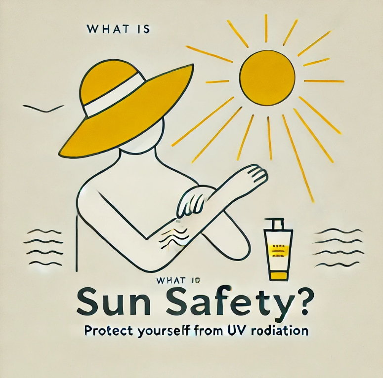
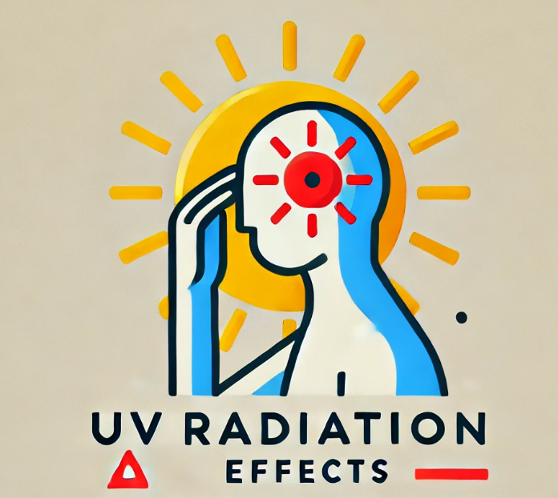

Stay Safe in the
Sun 🌞
Protect yourself from harmful UV rays by staying informed. Below is the live UV index for your location, along with an interactive guide to interpret it.
Current UV Index (Live)
Loading...
🌞 What is Sun Safety?
Sun safety involves protecting yourself from the harmful effects of the sun's UV radiation, which can lead to skin damage, premature aging, and even skin cancer.
🤔 Why Should You Care?
The UV Index measures the strength of the sun’s ultraviolet radiation. Even on cloudy days, UV rays can reach your skin, increasing the risk of burns and health issues. Awareness helps you make informed decisions to stay safe.
🛡️ How to Stay Protected?
Here are a few essential tips to protect yourself:
- 🧴 Use sunscreen with SPF 30+ and reapply every 2 hours.
- 🕶️ Wear sunglasses with UV protection.
- 👒 Use a wide-brimmed hat and protective clothing.
- ⏰ Avoid direct sun exposure during peak hours (10 AM - 4 PM).
👉About UV Radiation
Ultraviolet (UV) radiation is a form of electromagnetic energy. While it helps our body produce Vitamin D, too much UV exposure can cause sunburn, skin aging, and increase the risk of skin cancer.
🚀 Check Your UV Index Now!
Check UV IndexAdditional Resources
Learn more about sun safety from trusted sources: